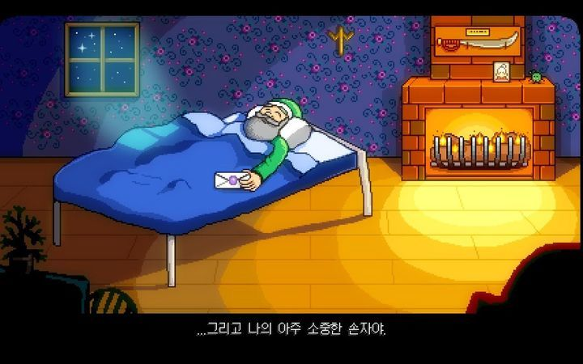

스토리

조자 주식회사에서 일하며 각박한 도시생활을 하던 주인공은 어느 날 어릴 적 할아버지가 삶이 고단할 때 열어보라는 편지를 뜯어보게 된다.
편지에는 할아버지가 과거 살던 농장에서 새 삶을 시작하라는 내용이 적혀있었고,
주인공은 한적한 지역인 스타듀 밸리의 펠리칸 마을로 이사 오게된다.
시스템
일반적으로 농사와 목축, 채집, 채광, 낚시 등이 있다.
메인 스토리에도 분기가 존재하며, 대기업 조자 마트와 펠리칸 마을 중 어느 하나의 편을 들어 마을을 원하는 방향으로 바꿀 수 있다.